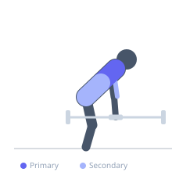
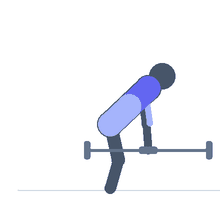

Exercise guide / Two-Arm Dumbbell Bent-Over Row
Two-Arm Dumbbell Bent-Over Row
The two-arm dumbbell bent-over row is performed identically to the barbell bent-over row, but with two dumbbells instead of a barbell. The independent dumbbells allow each arm to move through its natural path, reducing stress on the wrists and elbows compared to a fixed-bar variation. This version allows greater individual limb accountability and can help address left-right strength imbalances.
Primary muscles
latissimus dorsi
rhomboid major
Secondary muscles
trapezius middle
biceps brachii long head
erector spinae
Stabilizers
transverse abdominis
hamstrings
Equipment
Dumbbell (Fixed)
Optional
Lifting Straps


Starting position
- Hold a dumbbell in each hand. Hinge at the hips to 45 degrees of forward lean with a neutral spine. Let both dumbbells hang at arm's length.
Setup
- Choose matching dumbbells. The bilateral version requires greater torso stability than the single-arm variation.
Steps
- Step 1: Hinge at hips to roughly 45 degrees, dumbbells hanging straight down.
- Step 2: Retract scapulae and pull both dumbbells simultaneously toward the lower ribcage.
- Step 3: Keep elbows close to the body or allow slight flare based on grip position.
- Step 4: Squeeze the lats and rhomboids hard at the top.
- Step 5: Lower both dumbbells under control to full extension.
Coaching cues
- Hinge and hold — no torso bounce
- Pull both elbows back simultaneously
- Neutral spine is non-negotiable
Breathing
- Inhale and brace before each rep. Exhale on the row.
Range of motion
- Dumbbells hang at full arm extension at the bottom, pulled to lower ribcage at the top.
Tempo
- 2-1-2-0
Common mistakes
- Rounding the lower back due to hamstring tightness
- Using momentum by rocking the torso
- Allowing the elbows to flare too wide, shifting from a lat-focused to rear-delt-focused pull
Safety
- Maintain neutral spine throughout — reduce weight if the lower back rounds
- Hamstring flexibility determines hip hinge depth; do not force depth beyond neutral spine
Training
- strength: 5–8 reps
- hypertrophy: 8–12 reps
- strength: 3–5 sets
- hypertrophy: 3–4 sets
- Rest: {'strength': 150, 'hypertrophy': 90}